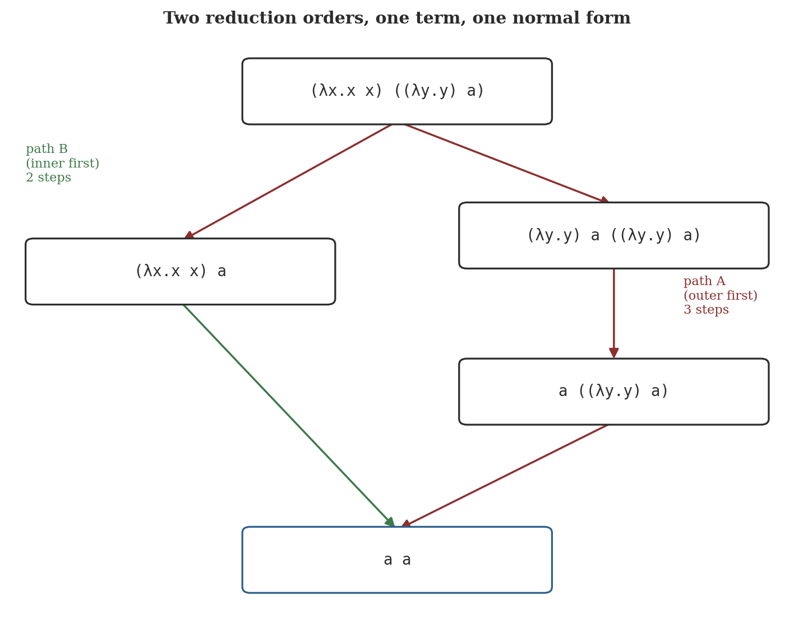
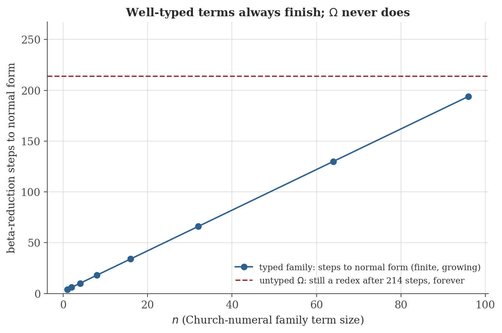

Type Theory and Functional Programming
Disclaimer: These are my personal notes compiled for my own reference and learning. They may contain errors, incomplete information, or personal interpretations. While I strive for accuracy, these notes are not peer-reviewed and should not be considered authoritative sources. Please consult official textbooks, research papers, or other reliable sources for academic or professional purposes.
Contents
1. The lambda calculus: syntax and reduction
Terms: $M::=x\mid\lambda x.M\mid MM$ (a variable, an abstraction, or an application). $\beta$-reduction: $(\lambda x.M)N\to M[x:=N]$ (capture-avoiding substitution of $N$ for free occurrences of $x$ in $M$); a term containing no such redex is a normal form. Write $\to^*$ for the reflexive-transitive closure of $\to$.
This is, deliberately, the entire syntax — no numbers, no booleans, no loops. Functional programming's central claim is that this minimal core, plus the encodings it makes possible (Section 3), is already a complete model of computation; everything else is notation built on top.
2. Confluence: the Church-Rosser theorem
If $M\to^*N_1$ and $M\to^*N_2$, there is $P$ with $N_1\to^*P$ and $N_2\to^*P$.
If $M$ has a normal form, it is unique.
Figure 1 makes this concrete: a term with two redexes reduces to the same normal form whether the outer or the inner one is contracted first, taking a different number of steps either way. Confluence is exactly the guarantee that "the value a program computes" is well-defined independent of which sub-expression an implementation happens to evaluate first — the theorem underneath a compiler being free to choose an evaluation order without changing the answer.

3. Fixed points and the Y combinator
The lambda calculus in Section 1 has no built-in recursion — a term cannot refer to itself by name. The Y combinator, $Y=\lambda f.(\lambda x.f(xx))(\lambda x.f(xx))$, manufactures self-reference from nothing but application and abstraction.
For every $M$: $YM=_\beta M(YM)$ (beta-convertible — related by the symmetric-transitive closure of $\to$).
$YM=_\beta M(YM)$ is a literal unfolding: applying $Y$ to (the lambda-encoding of) a recursive step function reproduces the entire recursive definition one layer deep, on demand — factorial is $Y(\lambda\mathit{fact}.\lambda n.\,\text{if }n=0\text{ then }1\text{ else }n\times\mathit{fact}(n-1))$, with no named self-reference anywhere in sight. The same untyped calculus that gives $Y$ its power also admits terms with no normal form at all: $\Omega=(\lambda x.xx)(\lambda x.xx)$ satisfies $\Omega\to\Omega$ exactly (the single redex reduces to a syntactically identical copy of itself), so it reduces forever without ever terminating. Section 6 shows this is not an accident of one badly-chosen term — it is unavoidable in a calculus expressive enough to define $Y$.
4. The simply-typed lambda calculus
Types: $T::=\iota\mid T\to T$. A typing judgment $\Gamma\vdash M:T$ ($\Gamma$ a finite partial map from variables to types) is derived by: Var ($x:T\in\Gamma\Rightarrow\Gamma\vdash x:T$), Abs ($\Gamma,x:T_1\vdash M:T_2\Rightarrow\Gamma\vdash\lambda x{:}T_1.M:T_1\to T_2$), App ($\Gamma\vdash M:T_1\to T_2,\ \Gamma\vdash N:T_1\Rightarrow\Gamma\vdash MN:T_2$).
Every abstraction now carries an explicit argument type, and the App rule only fires when the pieces fit — a term like $xx$ can never be typed (giving $x$ both an arrow type and that arrow type's own domain simultaneously is impossible in this system, Section 9's first pitfall makes this precise), which is exactly what rules $\Omega$ and $Y$ out of this typed calculus, and is the reason Sections 5–6 are provable here in a way they are not for Section 1's untyped calculus.
5. Type safety: progress and preservation
If $\Gamma,x{:}T_1\vdash M:T_2$ and $\Gamma\vdash N:T_1$, then $\Gamma\vdash M[x:=N]:T_2$.
(Proved by induction on the derivation of $\Gamma,x{:}T_1\vdash M:T_2$; routine but notationally heavy, and not reproduced in full — see Pierce, 2002, Lemma 9.3.8.)
If $\Gamma\vdash M:T$ and $M\to M'$, then $\Gamma\vdash M':T$.
If $\vdash M:T$ (empty context), then either $M$ is a value ($M=\lambda x{:}T_1.M_1$) or $M\to M'$ for some $M'$.
If $\vdash M:T$ and $M\to^*M'$ with $M'$ irreducible, then $M'$ is a value.
Preservation, applied repeatedly along $M\to^*M'$, keeps $M'$ well-typed at $T$; Progress applied to $M'$ then forces $M'$ to be a value, since it cannot step. This is Robin Milner's "well-typed programs don't go wrong": an irreducible, ill-formed configuration (applying a non-function, or — in a richer calculus with more base types — adding a number to a boolean) is exactly the situation Progress rules out for any well-typed term, at every point along its entire reduction, not merely at the start.
6. Strong normalization
Every well-typed term (some $\Gamma,T$ with $\Gamma\vdash M:T$) is strongly normalizing: every reduction sequence starting from it is finite.
This is the precise sense in which the simply-typed calculus is strictly weaker than Section 1's untyped one: $Y$ and $\Omega$ (Section 3) are simply not typable at all (Section 9 makes this explicit for $Y$) — there is no well-typed term with $\Omega$'s or $Y$'s self-application behavior, because Section 6 would then contradict itself. Real typed functional languages restore general recursion not by weakening this theorem but by adding a dedicated recursion primitive (a typed fixed-point operator, or named recursive function definitions) with its own, separate typing rule outside pure STLC — a deliberate, explicit escape hatch rather than something STLC's existing rules quietly permit.

7. The Curry-Howard correspondence
The typing rules in Section 4, read as inference rules without the terms attached, are exactly the natural-deduction rules for implication: Var is the assumption rule, Abs is implication-introduction (assume $T_1$, derive $T_2$, conclude $T_1\to T_2$), and App is implication-elimination — modus ponens (from $T_1\to T_2$ and $T_1$, conclude $T_2$). Under this identification, a well-typed term is not merely analogous to a proof — the type is the proposition, and the term literally is a specific proof of it, with sub-terms as sub-proofs.
Types $\leftrightarrow$ propositions; terms $\leftrightarrow$ proofs; $T_1\to T_2\leftrightarrow$ implication; product types $T_1\times T_2\leftrightarrow$ conjunction; sum types $T_1+T_2\leftrightarrow$ disjunction; an inhabited type $\leftrightarrow$ a provable proposition; $\beta$-reduction $\leftrightarrow$ proof normalization (removing a detour: introducing a connective immediately followed by eliminating it).
Worked example: $\lambda f{:}(\iota\to\iota).\lambda x{:}\iota.f(fx)$ has type $(\iota\to\iota)\to\iota\to\iota$, which under the correspondence reads as the proposition "if $\iota\to\iota$, then $\iota\to\iota$" — trivially true, and the term is a specific, explicit proof of it (assume a function $f:\iota\to\iota$ and $x:\iota$; apply $f$ twice; conclude $\iota$). The correspondence is not merely a naming coincidence: Section 5's Preservation theorem, restated in this vocabulary, says normalizing a proof preserves what it is a proof of — beta-reducing $(\lambda x.M)N$ to $M[x:=N]$ is removing an introduction immediately undone by an elimination, precisely a proof-theoretic cut-elimination step, and Section 6's strong normalization is exactly the statement that every proof in this system can be brought to a cut-free (redex-free) form in finitely many steps — Gentzen's cut-elimination theorem for this fragment of natural deduction, proved by the same reducibility technique either way.
8. Computation
The figures above are generated by type-theory/generate_figures.py, which implements a small capture-avoiding substitution and a leftmost-outermost reducer. The snippet below reproduces the strong-normalization data.
def church(n):
body = Var("x")
for _ in range(n):
body = App(Var("f"), body)
return Abs("f", Abs("x", body))
g = Abs("z", App(Abs("w", Var("w")), Var("z"))) # a reducible function
y = Var("y")
for n in [1, 2, 4, 8, 16, 32]:
term = App(App(church(n), g), y)
nf, steps = normalize(term)
print(f"n={n:2d} steps={steps:4d} normal_form={nf}")
omega_sub = Abs("x", App(Var("x"), Var("x")))
Omega = App(omega_sub, omega_sub)
t = Omega
for i in range(4):
t2, stepped = step_leftmost(t)
print(f"Omega step {i}: {t} -> {t2}")
t = t2
Actual output:
n= 1 steps= 4 normal_form=y
n= 2 steps= 6 normal_form=y
n= 4 steps= 10 normal_form=y
n= 8 steps= 18 normal_form=y
n=16 steps= 34 normal_form=y
n=32 steps= 66 normal_form=y
Omega step 0: (λx.x x) (λx.x x) -> (λx.x x) (λx.x x)
Omega step 1: (λx.x x) (λx.x x) -> (λx.x x) (λx.x x)
Omega step 2: (λx.x x) (λx.x x) -> (λx.x x) (λx.x x)
Omega step 3: (λx.x x) (λx.x x) -> (λx.x x) (λx.x x)The typed family's step count matches $2n+2$ exactly at every value tested — two steps to unfold the Church numeral (substituting $g$ for $f$, then $y$ for $x$), plus two more for each of the $n$ nested copies of the reducible $g=\lambda z.(\lambda w.w)z$ it exposes — confirming Section 6's guarantee quantitatively rather than just qualitatively. $\Omega$'s trace is not approximately unchanging — it is exactly the same term after every single step, letter for letter, the sharpest possible demonstration of non-termination a finite printout can give.
9. Common pitfalls
$xx$ (as in $\Omega$ or $Y$'s body) requires $x$ to have some type $T_1\to T_2$ (to be the function in the application) and to have type $T_1$ (to be the argument) simultaneously — but $x$ has only one type in a given context, and $T_1\to T_2=T_1$ is impossible for any finite type built from $\to$ and base types (the arrow type is always strictly "bigger" than either side). This is not a gap the type system happens to miss; it is the precise mechanism Section 6 relies on.
Section 6 guarantees every reduction sequence from a well-typed term terminates — not just the leftmost-outermost one used throughout this note's examples. This is stronger than "weak normalization" (some strategy terminates) and is why STLC evaluation order can be chosen freely (call-by-value, call-by-name, whatever a compiler prefers) without any risk of accidentally picking a non-terminating strategy for a term that has a terminating one.
Section 7's correspondence is with intuitionistic natural deduction — proof by contradiction and the law of excluded middle ($A\vee\neg A$) are not, in general, derivable in this system the way they are in classical logic, and correspondingly have no direct computational reading as ordinary terms in the calculus given here. Extending Curry-Howard to classical logic requires extra computational features (control operators corresponding to `call/cc`-style continuations) — a real, but separate, extension not covered by this note's correspondence table.
Figure 1's two paths reach the same normal form in $2$ and $3$ steps respectively — a small example of a real, general asymmetry: different reduction strategies can differ enormously (in the worst case, exponentially) in how many steps they take, even though confluence guarantees they never differ in the final answer. Leftmost-outermost reduction (used throughout this note) has its own separate theorem in its favor — it is guaranteed to find a normal form whenever one exists, which not every strategy is (an unlucky innermost-first strategy can loop forever reducing an argument that is never actually needed) — but that guarantee is a different, additional fact from confluence itself.
10. Connections
- Computability and formal languages. The Church–Turing thesis (that note's Section 4) is exactly the claim that this note's lambda calculus and that note's Turing machines compute the same class of functions; $\Omega$'s non-termination (Section 3 here) is the lambda-calculus counterpart of that note's undecidable Halting Problem — both are proved by essentially the same kind of self-referential construction.
- Distributed systems and concurrency. That note's process calculi extend this one's core idea (terms and reduction rules) with explicit concurrency and communication primitives; confluence-like properties (there, often called determinism or the diamond property for concurrent steps) play an analogous role in showing that certain concurrent computations have well-defined outcomes independent of scheduling.
- Discrete mathematics — logic. Section 7's Curry-Howard correspondence is, precisely, the identification of that note's proof system (natural deduction) with this note's type system; a propositional tautology's proof and a program of the corresponding type are the same object viewed through two vocabularies.
11. References
- Barendregt, H. P. (1984). The Lambda Calculus: Its Syntax and Semantics (Revised ed.). North-Holland.
- Pierce, B. C. (2002). Types and Programming Languages. MIT Press.
- Girard, J.-Y., Lafont, Y., & Taylor, P. (1989). Proofs and Types. Cambridge University Press.
- Sørensen, M. H., & Urzyczyn, P. (2006). Lectures on the Curry-Howard Isomorphism. Elsevier.